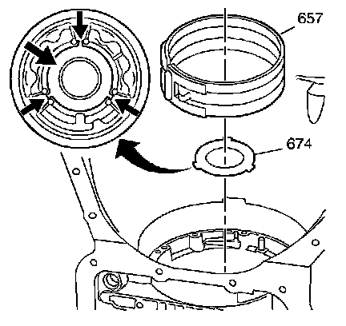
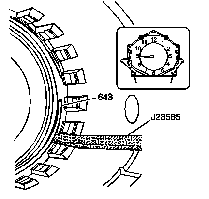

Low and Reverse Band/Thrust Washer Installation
Low and Reverse Band/Thrust Washer Installation
Tools Required
^ J 28585 Snap Ring Remover
^ J 36850 Transjel(R) Lubricant

1. Refer to the rear unit end play measurement taken during disassembly. If the rear unit end play measurement is not within specifications, use the removed selective thrust washer (674) and the Output Shaft Selective Thrust Washer Specifications table in order to select the correct selective thrust washer. Refer to End Play Specifications.
Important: One side of the output shaft selective thrust washer (674) is machined completely flat with no rounded edges. This side must face up.
2. Install the output shaft selective thrust washer (674).
3. Retain the output shaft selective thrust washer (674) with J 36850 or equivalent.
Important: When performing steps 4 and 5, align the low and reverse band tab with the low and reverse band servo pin hole.
4. Using J 28585, install the low and reverse band (657).

5. Install the center support spacer (643) into the case so it rests on the shoulder at the bottom of the case splines. The center support spacer opening should be placed at the 9 o'clock position.